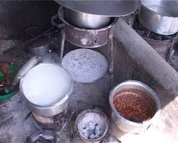

TAHADHARI NA UGONJWA
WA KIPINDUPINDU:
WA KIPINDUPINDU:
Kuna uwezekano mkubwa mtu akajilinda asipate kipindupindu kama atafuata taratibu zifuatazo:
1.Kumfikisha mgonjwa haraka katika hospitali au kituo cha afya kilichopo karibu nawe.
2.Kutochezea nguo na matandiko yaliochafuliwa na mgonjwa wa kipindupindu.
3.Kuosha au kuhudumia mwili wa mtu aliyekufa au anaeugua kwa ugonjwa wa kipindupindu bila ya kujikinga.
Tanbihi:
Mgonjwa ni lazima asimamiwe na kuhudumia na wahudumu wa afya pale anapopata kipindupindu
4.Matapishi na kinyesi cha mgonjwa ni hatari kwa afya yako. Kwa hiyo nguo na vitu vingine vilivyochafuliwa na mgonjwa vilowekwe kwenye kemikali
maalumu (mfano Jik) ili kuua vimelea vya kipindupindu.
5.Biashara za vyakula na vinywaji visivyo hifadhiwa hupelekea Nzi au wadudu waliobeba vimelea vya kipindupindu kutua juu ya vyakula hivyo na kumsababishia mlaji wa chakula hicho kupata maradhi ya kipindupindu.

6.Mazingira yasiyotunzwa vizuri na jamii yanaweza kuchochea magonjwa ya miripuko kama vile kipundupindu